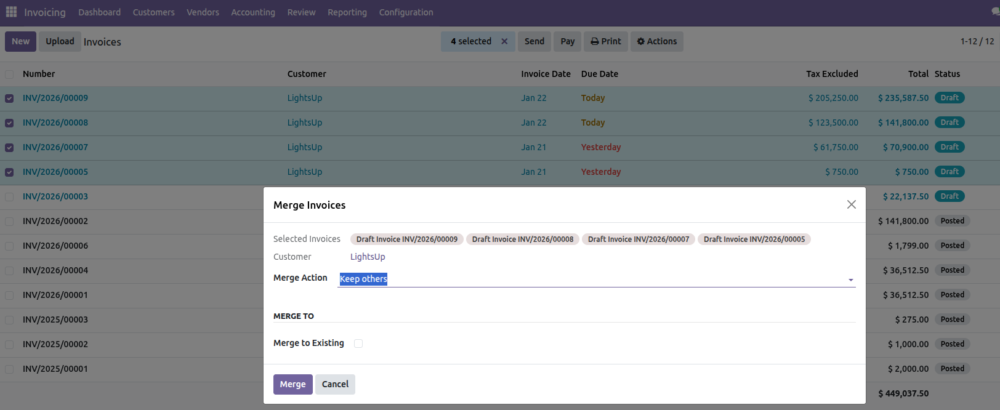
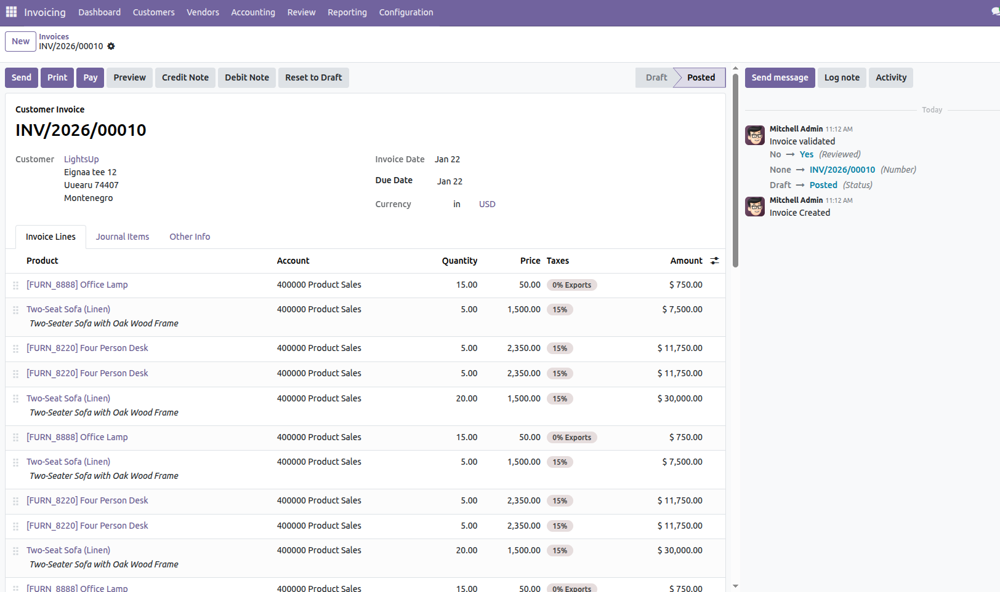
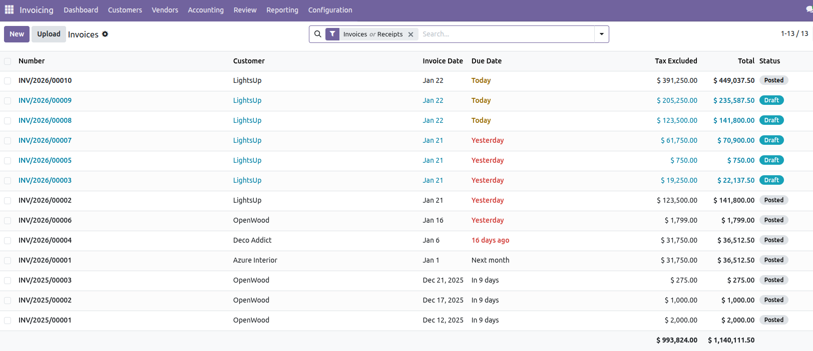

Inom Invoice Merge is a professional accounting enhancement module for Odoo 19 that allows users to merge multiple draft invoices into a single consolidated invoice using a guided wizard.
This module is ideal for accountants, finance teams, and businesses that frequently generate multiple invoices for the same customer and want a clean, efficient, and error-free billing process.
Managing multiple draft invoices for the same customer can create confusion, increase accounting errors, and slow down billing operations. Inom Invoice Merge simplifies this process by allowing safe invoice consolidation while fully respecting Odoo’s accounting rules.
1. Go to Invoicing → Invoices.
2. Select two or more invoices in Draft state.
3. Click Actions → Merge Invoices.
4. Review invoice and customer details in the wizard.
5. Choose whether to keep or cancel original invoices.
6. Click Merge to create a single consolidated invoice.
Below are preview images showing the invoice list, merge action, wizard, and final merged invoice.



We provide full support and customization services. If you need additional features such as:
Email: info@inomerp.in
We provide a one-time setup and installation service completely free of cost on any Odoo-supported server. Our technical team ensures smooth installation and configuration so you can start using the module without any hassle.
Important Note:
Free support is provided only for issues related to the
standard Odoo source code. Issues caused by
third-party modules, custom developments, or compatibility conflicts
are outside the scope of free support and may be chargeable.
For demos, customization, or enterprise support, connect with our team:
https://www.inomerp.in/contactus